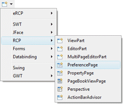
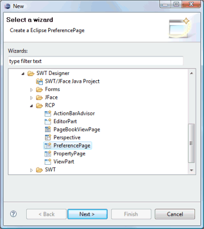
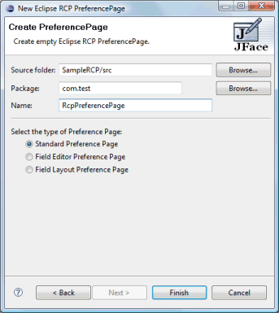
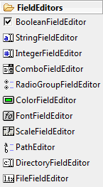
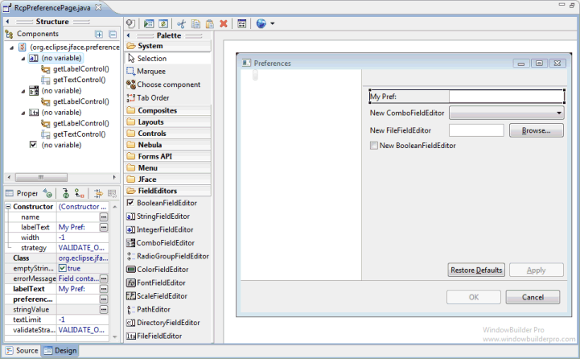

<html>

<head>
<title>RCP PreferencePage Wizard</title>
<link href="../../../book.css" rel="stylesheet" type="text/css" />
</head>

<body>

<h1>RCP PreferencePage Wizard</h1>
<table border="0" cellpadding="0" cellspacing="0" width="800">
  <tr>
    <td>
        Subclasses of the RCP <b>ViewPart</b> class can be
              created using the <b>RCP PreferencePage</b> wizard. The wizard can be
              selected from the drop down wizard menu or from the
              Eclipse <b>New</b> wizard.
              <p>To use the wizard, select the project source folder and package
              to contain the class. Then enter the class name, view name/title and hit the <b>Finish</b>
              button.</td>
  </tr>
  <tr>
    <td>
      <br>
		&nbsp; 
		</td>
  </tr>
  <tr>
    <td>
    <p><br>
	The wizard generates the following code.</p>
		<blockquote>
			<font SIZE="2" COLOR="#7f0055"><b>
			<p><font face="Courier">import</font></b></font><font SIZE="2"><font face="Courier"> 
			org.eclipse.jface.preference.PreferencePage;</font></font><font SIZE="2" COLOR="#7f0055"><b><font face="Courier"><br>
			import</font></b></font><font SIZE="2"><font face="Courier"> 
			org.eclipse.swt.SWT;</font></font><font SIZE="2" COLOR="#7f0055"><b><font face="Courier"><br>
			import</font></b></font><font SIZE="2"><font face="Courier"> 
			org.eclipse.swt.widgets.Composite;</font></font><font SIZE="2" COLOR="#7f0055"><b><font face="Courier"><br>
			import</font></b></font><font SIZE="2"><font face="Courier"> 
			org.eclipse.swt.widgets.Control;</font></font><font SIZE="2" COLOR="#7f0055"><b><font face="Courier"><br>
			import</font></b></font><font SIZE="2"><font face="Courier"> 
			org.eclipse.ui.IWorkbench;</font></font><font SIZE="2" COLOR="#7f0055"><b><font face="Courier"><br>
			import</font></b></font><font SIZE="2"><font face="Courier"> 
			org.eclipse.ui.IWorkbenchPreferencePage;<br>
			</font></font><font SIZE="2" COLOR="#7f0055"><b>
			<font face="Courier"><br>
			public</font></b></font><font face="Courier"><font SIZE="2"> </font>
			<font SIZE="2" COLOR="#7f0055"><b>class</b></font><font SIZE="2"> 
			RcpPreferencePage </font><font SIZE="2" COLOR="#7f0055"><b>extends</b></font><font SIZE="2"> 
			PreferencePage </font></font><font face="Courier" SIZE="2">{<br>
			<br>
&nbsp;&nbsp;&nbsp; </font><font SIZE="2" COLOR="#7f0055" face="Courier"><b>
			public</b></font><font face="Courier" SIZE="2"> RcpPreferencePage() 
			{<br>
&nbsp;&nbsp;&nbsp; </font><font face="Courier" SIZE="2">&nbsp;&nbsp;&nbsp;
			</font><font SIZE="2" COLOR="#7f0055" face="Courier"><b>super</b></font><font face="Courier" SIZE="2">();<br>
&nbsp;&nbsp;&nbsp; </font><font face="Courier" SIZE="2">}<br>
			</font><font SIZE="2" COLOR="#646464" face="Courier"><br>
			</font><font face="Courier" SIZE="2">&nbsp;&nbsp;&nbsp; </font>
			<font SIZE="2" COLOR="#646464" face="Courier">@Override<br>
			</font><font face="Courier" SIZE="2">&nbsp;&nbsp;&nbsp; </font>
			<font SIZE="2" COLOR="#7f0055" face="Courier"><b>public</b></font><font face="Courier" SIZE="2"> 
			Control createContents(Composite parent) {<br>
			</font><font face="Courier" SIZE="2">&nbsp;&nbsp;&nbsp; </font>
			<font face="Courier" SIZE="2">&nbsp;&nbsp;&nbsp; Composite container 
			= </font><font face="Courier"><font SIZE="2" COLOR="#7f0055"><b>new</b></font><font SIZE="2"> 
			Composite(parent, SWT.</font><font SIZE="2" COLOR="#0000c0"><i>NONE</i></font></font><font face="Courier" SIZE="2">);<br>
&nbsp;&nbsp;&nbsp; </font><font face="Courier" SIZE="2">&nbsp;&nbsp;&nbsp;
			</font><font SIZE="2" COLOR="#7f0055" face="Courier"><b>return</b></font><font face="Courier" SIZE="2"> 
			container;<br>
&nbsp;&nbsp;&nbsp; </font><font face="Courier" SIZE="2">}<br>
			</font><font face="Courier"><font SIZE="2" COLOR="#7f0055"><b><br>
			</b></font></font><font face="Courier" SIZE="2">&nbsp;&nbsp;&nbsp;
			</font><font face="Courier"><font SIZE="2" COLOR="#7f0055"><b>public</b></font><font SIZE="2">
			</font><font SIZE="2" COLOR="#7f0055"><b>void</b></font></font><font face="Courier" SIZE="2"> 
			init(IWorkbench workbench) {<br>
&nbsp;&nbsp;&nbsp; </font><font face="Courier" SIZE="2">&nbsp;&nbsp;&nbsp;
			</font><font SIZE="2" COLOR="#3f7f5f" face="Courier">// Initialize 
			the preference page</font><font face="Courier" SIZE="2"><br>
&nbsp;&nbsp;&nbsp; </font><font SIZE="2"><font face="Courier">}<br>
			}</font></p>
			</font>
		</blockquote>
      <p>When editing RCP PreferencePages, all of the standard SWT layouts, 
		containers and widgets are available. Standard Preference Pages can use any widget
      and layout manager, but
      the preference value getting and setting must be coded by hand.&nbsp;</p>
      <p></p>
    <p>The wizard generates the following code for <a name="FieldEditor">Field
    Editor</a> Preference Pages.</p>
      <blockquote>
                <dl>
                  <dt><font size="2" color="#7f0055" face="Courier"><b>import</b></font><font face="Courier New" size="2"> org.eclipse.jface.preference.FieldEditorPreferencePage;<o:p>
                    </o:p>
                    </font></dt>
                  <dt><font size="2" color="#7f0055" face="Courier"><b>import</b></font><font face="Courier New" size="2"> org.eclipse.ui.IWorkbench;<o:p>
                    </o:p>
                    </font></dt>
                  <dt><font face="Courier New" size="2">&nbsp;<o:p>
                    </o:p>
                    </font></dt>
                  <dt><font size="2" color="#7f0055" face="Courier"><b>public class</b></font><font face="Courier New" size="2"> 
                    </font><font SIZE="2" face="Courier"> 
			RcpPreferencePage</font><font face="Courier New" size="2"> 
                    </font><font size="2" color="#7f0055" face="Courier"><b>extends</b></font><font face="Courier New" size="2"> FieldEditorPreferencePage {<o:p>
                    </o:p>
                    </font></dt>
                  <dt><font face="Courier New" size="2">&nbsp;&nbsp;&nbsp;
                    </font><font size="2" color="#7f0055" face="Courier"><b>public</b></font><font face="Courier New" size="2"> 
                    </font><font SIZE="2" face="Courier"> 
			RcpPreferencePage</font><font face="Courier New" size="2">() {<o:p>
                    </o:p>
                    </font></dt>
                  <dt><font face="Courier New" size="2">&nbsp;&nbsp;&nbsp;
                    &nbsp;&nbsp;&nbsp;&nbsp;</font><font size="2" color="#7f0055" face="Courier"><b>super</b></font><font face="Courier New" size="2">(</font><font size="2" color="#0000c0" face="Courier"><i>FLAT</i></font><font face="Courier New" size="2">);<o:p>
                    </o:p>
                    </font></dt>
                  <dt><font face="Courier New" size="2">&nbsp;&nbsp;&nbsp; }<o:p>
                    </o:p>
                    </font></dt>
                  <dt><font face="Courier New" size="2">&nbsp;&nbsp;&nbsp;
                    </font><font size="2" color="#7f0055" face="Courier"><b>protected void</b></font><font face="Courier New" size="2"> createFieldEditors() {<o:p>
                    <br>
&nbsp;&nbsp;&nbsp;&nbsp;&nbsp;&nbsp;&nbsp;
                    </o:p>
                    </font><font color="#3f7f5f" face="Courier" size="2">// 
					Create the field editors</font></dt>
                  <dt><font face="Courier New" size="2">&nbsp;&nbsp;&nbsp; }<o:p>
                    </o:p>
                    </font></dt>
                  <dt><font face="Courier New" size="2">&nbsp;&nbsp;&nbsp;
                    </font><font size="2" color="#7f0055" face="Courier"><b>public void</b></font><font face="Courier New" size="2"> init(IWorkbench workbench) {<o:p>
                    <br>
&nbsp;&nbsp;&nbsp;&nbsp;&nbsp;&nbsp;&nbsp;
                    </o:p>
                    </font><font color="#3f7f5f" face="Courier" size="2">// 
					Initialize the preference page</font></dt>
                  <dt><font face="Courier New" size="2">&nbsp;&nbsp;&nbsp; }<o:p>
                    </o:p>
                    </font></dt>
                  <dt><font face="Courier New" size="2">}</font></dt>
                </dl>
      </blockquote>
      <p>Field Editor Preference Pages use a GridLayout and a set of 
		<a href="../../palettes/swt_palette.html#FieldEditors">specialized
      field editor widgets</a> with their own unique widget palette. Standard
      widgets and layout managers can't be used.&nbsp;</p>
      <div align="left">
        <table border="0" cellpadding="0" cellspacing="0" width="100%">
          <tr>
            <td valign="top">
			</td>
            <td width="10" valign="top">&nbsp;&nbsp;&nbsp;</td>
            <td valign="top">
            </td>
          </tr>
        </table>
      </div>
      <p><a name="FieldLayout">Field Layout</a> Preference Pages are a hybrid
      that can use either regular widgets
      or 
      field editors.
      </td>
  </tr>
</table>
</body>
</html>
